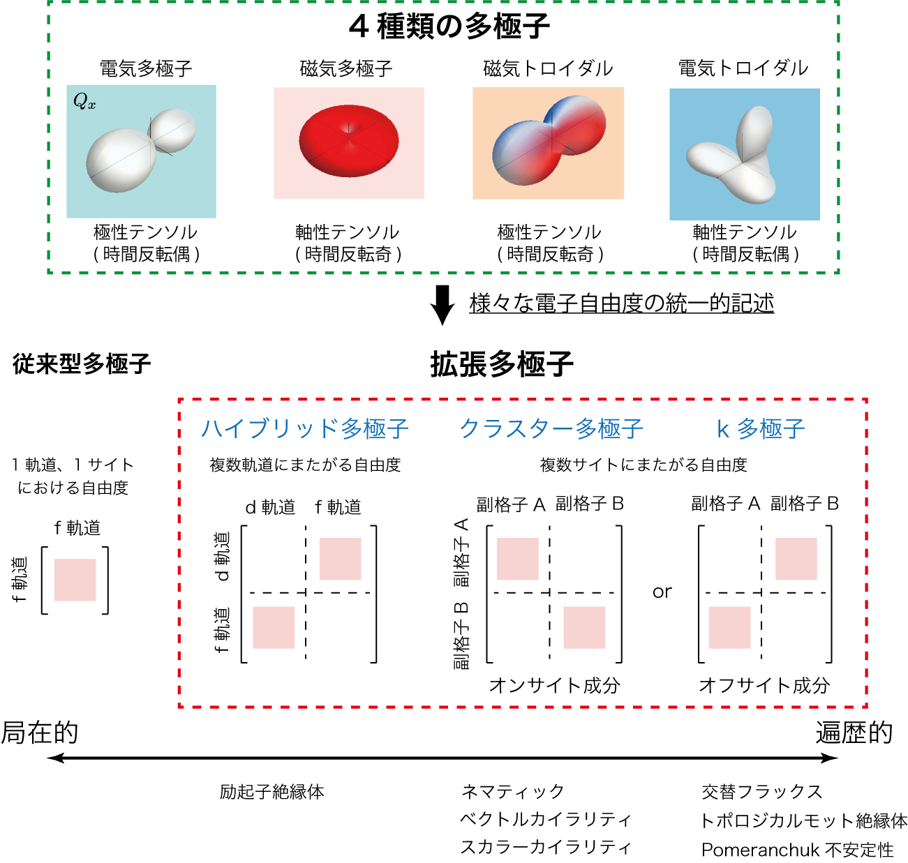
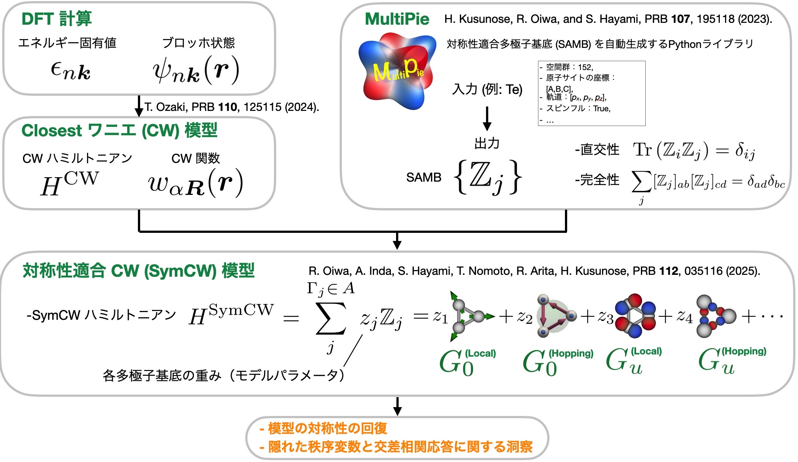
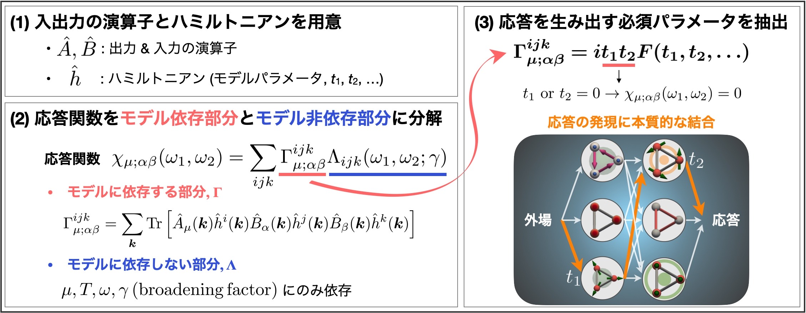
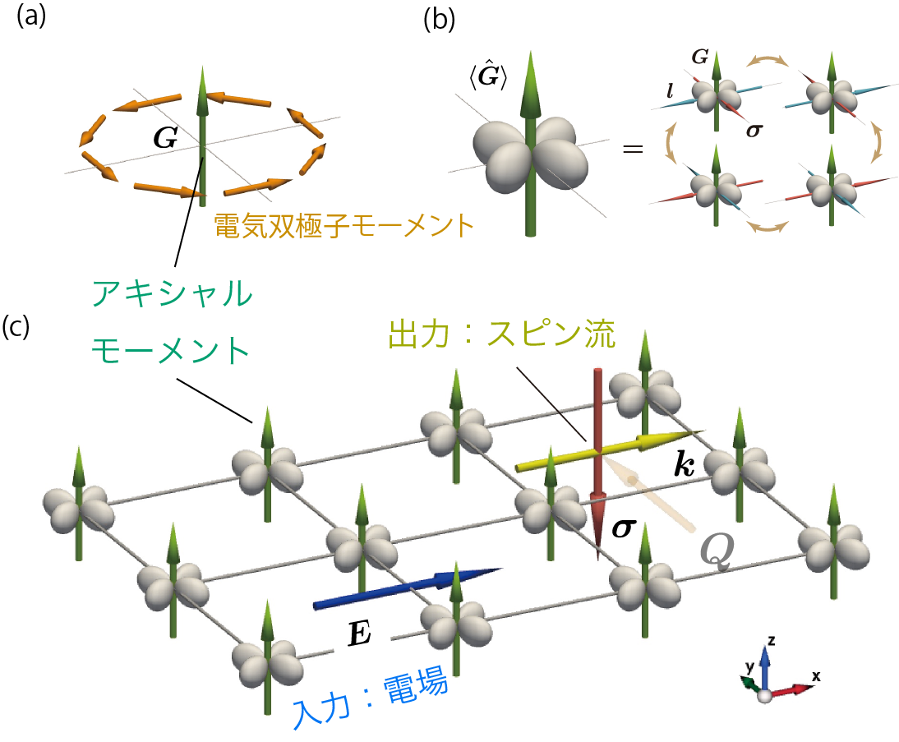
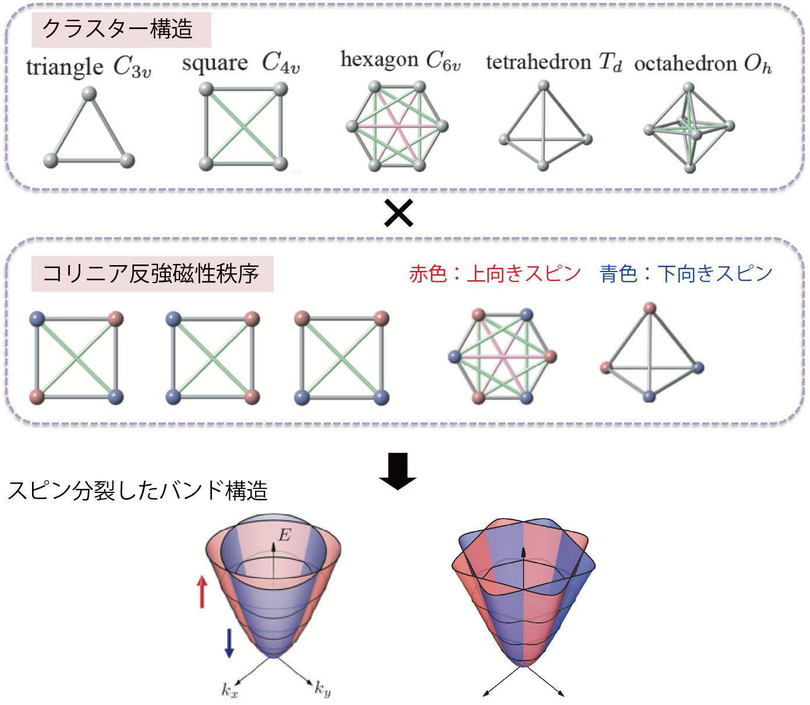
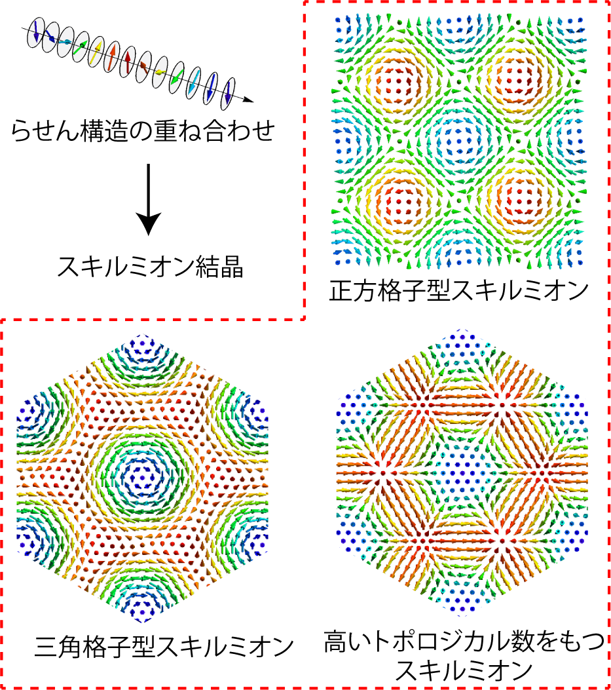
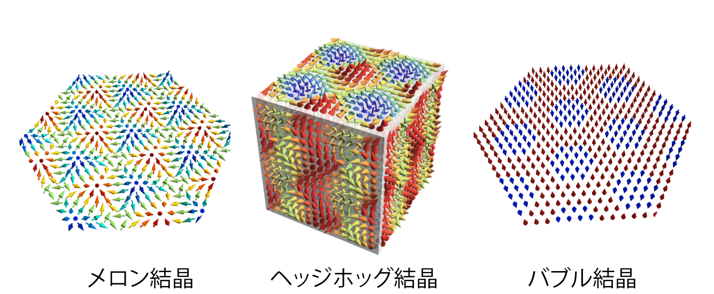
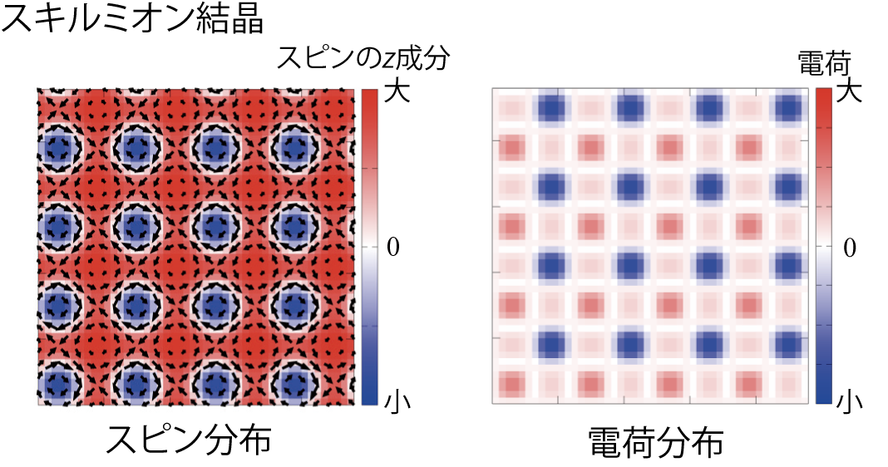

ミクロな拡張多極子に基づいた電子物性表現論の構築

物性物理学の魅力の一つは，固体中における電荷・スピン・軌道といった電子自由度間の複雑な相関効果に由来する多彩な物性現象です．
しかし一方，その複雑さゆえにミクロな電子自由度とマクロな物性現象の対応関係を理解することは容易ではありません．
我々は，物質系が示す多種多様な電子相やマルチフェロイクス応答，量子伝導を基礎的に理解することを目指して，ミクロな多極子概念に基づいた電子物性表現論の構築を行っています．
多極子は，元々古典電磁気学で空間に異方的な電荷分布や磁荷分布を表現するために用いられてきたものですが，電子のようなミクロなスケールからなる量子力学の世界に対しても適用することができます．
こうした多極子概念の導入は，従来型の単純な電荷秩序や強磁性秩序のみならず，固体中における電子の電荷・スピン・軌道自由度が複雑に絡んだ状況で実現するネマティック秩序やカレント秩序，軌道秩序，トロイダル秩序，エキシトニック秩序，回転秩序，カイラル秩序といった非従来型の電子秩序相を，多極子という統一的な枠組みで記述することを可能にします．
さらに最近では，分子軌道や反強磁性構造のような多原子にまたがる状態に対して，クラスター多極子あるいはボンド多極子といった形で多極子の概念を拡張することで，新規電子相や交差相関現象を理解・整理することが可能になりました．
こうした拡張多極子による電子自由度の一般的記述は，現実物質が示す輸送現象や励起構造，量子伝導現象を統一的に理解・予測する上で有益な情報を与えるだけでなく，電場，電流，スピン流，磁場，弾性場，熱流といった種々多様な外場応答に対するさらなるマルチフェロイクス現象を示す新規機能物質探索の新たな指針にもなります．
主な成果
♦多極子基底を用いた超伝導秩序変数の分類
- A. Kirikoshi and S. Hayami, Phys. Rev. B 109, 174510 (2024)
♦対称性適合多極子基底の構築
- H. Kusunose, R. Oiwa, and S. Hayami, Phys. Rev. B 107, 195118 (2023)
♦32の結晶点群および122の磁気点群における多極子の分類論の構築
- M. Yatsushiro, H. Kusunose, and S. Hayami, Phys. Rev. B 104, 054412 (2021)
- [Editors' Suggestion] S. Hayami, M. Yatsushiro, Y. Yanagi, and H. Kusunose,
Phys. Rev. B 98, 165110 (2018)
♦クラスター多極子を用いた反強磁性構造の基底生成
- [Editors' Suggestion] M.-T. Suzuki, T. Nomoto, R. Arita, Y. Yanagi, S. Hayami, and H. Kusunose, Phys. Rev. B 99, 174407 (2019)
♦従来型多極子からクラスター・ボンド・ハイブリッド多極子への拡張
- S. Hayami, Y. Yanagi, and H. Kusunose, Phys. Rev. B 102, 144441 (2020)
- H. Kusunose, R. Oiwa, and S. Hayami, J. Phys. Soc. Jpn. 89, 104704 (2020)
♦トロイダル多極子に対する量子力学的演算子の定式化
- S. Hayami and H. Kusunose, J. Phys. Soc. Jpn. 87, 033709 (2018)
(その他の関連論文)
(誌上セミナー) 速水 賢，大岩 陸人，八城 愛美，柳 有起，楠瀬 博明, 固体物理 58(7), 357-376 (2023)
(誌上セミナー) 速水 賢，大岩 陸人，八城 愛美，柳 有起，楠瀬 博明, 固体物理 58(1), 11-30 (2023)
(誌上セミナー) 速水 賢，八城 愛美，柳 有起，楠瀬 博明, 固体物理 57(3), 281-291 (2022)
(誌上セミナー) 速水 賢，八城 愛美，柳 有起，楠瀬 博明, 固体物理 56(10), 507-531 (2021)
(誌上セミナー) 速水 賢，八城 愛美，柳 有起，楠瀬 博明, 固体物理 56(7), 333-353 (2021)
(誌上セミナー) 速水 賢，八城 愛美，柳 有起，楠瀬 博明, 固体物理 56(4), 171-188 (2021)
(誌上セミナー) 速水 賢，八城 愛美，柳 有起，楠瀬 博明, 固体物理 56(1), 1-19 (2021)
(誌上セミナー) 速水 賢，八城 愛美，柳 有起，楠瀬 博明, 固体物理 55(8), 379-396 (2020)
(誌上セミナー) 速水 賢，八城 愛美，柳 有起，楠瀬 博明, 固体物理 55(1), 1-11 (2020)
(誌上セミナー) 速水 賢，八城 愛美，柳 有起，楠瀬 博明, 固体物理 54(3), 131-145 (2019)
(特集号) 楠瀬 博明，速水 賢, 固体物理 55(11), 523-534 (2020)
対称性適合多極子基底を用いた第一原理有効ワニエ模型計算法の開発と応用

我々は，現実物質の基本要素を取り入れた第一原理計算法と，電子状態を多極子基底で記述する電子多極子表現論を融合した計算手法の開発にも取り組んでいます． 物質が示す電荷秩序，磁気秩序，超伝導などの多彩な物性は，構成元素の種類や結晶構造，電子間相互作用，スピン軌道相互作用など，多様な要素が複雑に絡み合うことで生み出されます． これらを微視的に理解するために，現実物質の基本要素を詳細に反映した第一原理計算に基づき，低エネルギー有効ワニエ模型を構築する手法とその計算技術が近年急速に進歩しています． 一方，従来の第一原理有効ワニエ模型計算法では，電子のスピン・軌道・副格子自由度間のどのような結合が対象とする物性において重要であるか，といった微視的機構を解明するには不十分でした． 我々は最近，電子のスピン・軌道・副格子自由度の結合を見通しよく記述できる対称性適合多極子基底(SAMB)の線型結合によって系の対称性を満たす第一原理有効模型を構築する手法を開発しました． SAMB は結晶場パラメータやスピン軌道相互作用，電子ホッピングといった物理的意味が明確な成分で構成されるため，その表式から各自由度間の隠れた重要な結合を明らかにできます． SAMB の係数はモデルパラメータに対応し，第一原理計算で得られたバンド構造を再現するように最適化されます． 当初は機械学習による反復計算を用いていましたが，Closestワニエ関数法を応用することで，非反復的かつ一意にSAMB の係数を決定する新手法を提案しました． 得られた手法を単体 Te に適用した結果，本手法と第一原理計算のエネルギー固有値の平均誤差が 1 meV 以下となり，機械学習を用いた従来手法の約 100 倍の精度を実現しました． 本手法は，PythonライブラリSymClosestWannierとしてGitHub(https://github.com/CMT-MU/SymClosestWannier)上で公開しており，今後の広範な物性解析への応用が期待されます．
主な成果
♦キラル結晶における電気トロイダル単極子由来の電場誘起格子回転歪み
- R. Oiwa and H. Kusunose, Phys. Rev. Lett. 129, 116401 (2022)
♦対称性適合多極子基底の構築
- H. Kusunose, R. Oiwa, and S. Hayami, Phys. Rev. B 107, 195118 (2023)
♦対称性適合多極子基底を用いた第一原理有効Closestワニエ模型計算法の開発
- R. Oiwa, A. Inda, S. Hayami, T. Nomoto, R. Arita, and H. Kusunose, Phys. Rev. B 112, 035116 (2025)
電気・磁気・弾性・熱・光自由度間にまたがる新しいマルチフェロイクス現象の開拓

対称性は，物質中の原子や電子といったミクロな世界において，その性質を特徴づける重要な概念です． 例えば，系の磁気的性質(磁性)は時間反転対称性と深く関連しており，系の電気的性質(誘電性)は空間反転対称性と深く関連しています． つまり，時間反転対称性や空間反転対称性の破れが生じた際には，系は磁性や誘電性といった機能を新たに獲得します． また，これらの対称性が同時に破れた際には，磁性と誘電性をともに示すようなマルチフェロイクス物質が実現します． マルチフェロイクス物質の大きな特徴は，電場によって磁性を制御したり，磁場によって誘電性を制御するといった「交差相関」な制御が可能なことです． さらにマルチフェロイクスの概念は，磁性と誘電性の交差相関に留まらず，誘電性と弾性を結びつける圧電性や磁性と弾性を結びつける磁歪などの様々な組み合わせを含んでいます． これらの多様な組み合わせの中から，さらなる新しい機能物性を促す新規マルチフェロイクス現象を開拓することは重要かつ興味深い課題です． 我々は，電子自由度を系統的に表現できる多極子概念を用いて，多様なマルチフェロイクス応答現象をマクロな対称性のみならずミクロな電子自由度の立場から理解することを目指して研究を行っています． 特に，従来の電場や磁場，弾性場のみに留まらず，電流，スピン流，熱流といった様々な外場に対する応答を含む理論体系の構築を目指しています．
主な成果
♦磁気トロイダル単極子が示す時間反転変換応答
- S. Hayami and H. Kusunose, Phys. Rev. B 104, 054412 (2021)
♦ミクロな多極子と交差相関現象・量子伝導現象の関係
- M. Yatsushiro, H. Kusunose, and S. Hayami, Phys. Rev. B 104, 054412 (2021)
- [Editors' Suggestion] S. Hayami, M. Yatsushiro, Y. Yanagi, and H. Kusunose,
Phys. Rev. B 98, 165110 (2018)
♦磁気四極子および磁気トロイダル双極子が示す内因性非線形異常ホール効果
- A. Kirkoshi and S. Hayami, Phys. Rev. B 107, 155109 (2023)
♦磁気四極子秩序下でのスピン-軌道-運動量ロッキング
- S. Hayami and H. Kusunose, Phys. Rev. B 104, 045117 (2021)
♦奇パリティ多極子秩序下でのNMR・NQRスペクトルの理論
- M. Yatsushiro and S. Hayami, Phys. Rev. B 102, 195147 (2020)
♦隠れた反対称スピン軌道相互作用が引き起こす非従来型多極子秩序と非対角応答
- M. Yatsushiro and S. Hayami, J. Phys. Soc. Jpn. 89, 013703 (2020)
- S. Hayami, H. Kusunose, and Y. Motome, J. Phys.: Condens. Matter 28, 395601 (2016)
- S. Hayami, H. Kusunose, and Y. Motome, Phys. Rev. B 90, 081115(R) (2014)
♦金属中の磁気トロイダル秩序における電流誘起磁化現象の解析
- [Editors' Suggestion] S. Hayami, H. Kusunose, and Y. Motome, Phys. Rev. B 90, 024432 (2014)
(その他の関連論文)
(解説記事) 速水 賢，楠瀬 博明，求 幸年, 固体物理 50(5), 217-234 (2015)
M. Yatsushiro and S. Hayami, JPS Conf. Proc. 30, 011151 (2020)
S. Hayami, H. Kusunose, and Y. Motome, Phys. Rev. B 97, 024414 (2018)
S. Hayami, H. Kusunose, and Y. Motome, Physica B: Condensed Matter 536, 649-653 (2018)
Y. Sugita, S. Hayami, and Y. Motome, Physics Procedia 75, 419-425 (2015)
S. Hayami, H. Kusunose, and Y. Motome, J. Phys.: Conf. Ser. 592, 012131 (2015)
応答を生み出す本質的なモデルパラメータの系統的な抽出手法の開発

近年，反強磁性体が示す巨大な異常ホール効果やネルンスト効果，空間反転対称性が破れた非磁性体における非線形ホール効果など，線形・非線形の複雑な物性応答に関する研究が活発に行われています． これらの応答現象は，系の対称性や電子の内部自由度の相関に由来しており，その発現機構をより深く理解するためには，応答を生み出す本質的なモデルパラメータと，電荷・磁気秩序の間の非自明な結合から生じる寄与を明らかにする必要があります． しかしながら，既存の理論手法だけでは上記のような解析は困難でした． 我々は， Keldysh Green関数法とChebyshev多項式展開を用いることで，本来は数値的に扱う応答関数をモデルパラメータの多項式として解析的に計算可能な表式で表し，線形・非線形応答を生み出す本質的なモデルパラメータを系統的に抽出する一般手法を開発しました． これにより，数値的にしか扱えなかった応答関数に対しても，その主要な構成要素をモデルパラメータの多項式として明示的に抽出することが可能となり，物性応答を生み出す根本的なメカニズムに迫ることができます． 本手法は，異常ホール効果やスピン流といった線形応答のみならず，非線形光学応答や非線形電気伝導，さらには各種の交差相関応答など，多岐にわたる応答現象に適用できます． また，周期的な結晶系だけでなく，分子や人工原子系のような孤立クラスター系にも応用可能であり，固体物理に限らず無機・有機化学，ナノサイエンス分野においても新たな展開が期待されます． 本手法により，複雑な物性応答の理解と機能性物質の効率的な探索に向けた新たな指針が得られました．
主な成果
♦応答を生み出す本質的なモデルパラメータの系統的な抽出手法の開発
- [Editors' Choice] R. Oiwa and H. Kusunose, J. Phys. Soc. Jpn. 91, 014701 (2022)
♦金属中の磁気トロイダル秩序が示す非相反伝導現象の解析
- M. Yatsushiro, R. Oiwa, H. Kusunose, and S. Hayami, Phys. Rev. B 105, 155157 (2022)
トロイダル秩序が誘起する物性現象の開拓と理解

通常の電気多極子や磁気多極子とは，空間反転対称性と時間反転対称性に関するパリティが異なる2つのトロイダル多極子(磁気トロイダルと電気トロイダル)は，新しい機能性を伴う秩序相の微視的起源となることから精力的に研究が行われています．
例えば，空間反転対称性と時間反転対称性がともに破れた系で現れる磁気トロイダル双極子は，電気磁気効果や非相反方向二色性の微視的な起源を与えます．
また，空間反転対称性と時間反転対称性がともに保たれた系で現れる電気トロイダル双極子は，報告例がまだ少ない稀有な電子自由度です．
こうしたトロイダル双極子に関する研究は，磁気トロイダル双極子に関しては磁化と電気分極のベクトル積が有限になるような磁性絶縁体，電気トロイダル双極子に関しては電気分極と位置ベクトルのベクトル積が有限になるような絶縁体を対象とした研究が行われてきましたが，一方でこれらの状態が自発的に秩序化したトロイダル秩序の微視的な発現機構や，それらが示す物性現象には未解明な点が多く残されていました．
我々は，こうしたトロイダル自由度が誘起するマルチフェロイクス現象や非相反伝導現象の開拓をミクロな電子自由度の立場から行っています．
主な成果
♦電気トロイダル単極子を用いた構造キラリティの定量評価
- A. Inda, R. Oiwa, S. Hayami, H. M. Yamamoto, and H. Kusunose, J. Chem. Phys. 160, 184117 (2024)
♦電気トロイダル双極子モーメントが示す反対称熱分極
- J. Nasu and S. Hayami, Phys. Rev. B 105, 245125 (2022)
♦磁気トロイダル四極子に伴うスピン伝導
- S. Hayami and M. Yatsushiro, J. Phys. Soc. Jpn. 91, 063702 (2022)
♦金属中の磁気トロイダル秩序が示す非相反伝導現象の解析
- M. Yatsushiro, R. Oiwa, H. Kusunose, and S. Hayami, Phys. Rev. B 105, 155157 (2022)
♦スピン軌道結合金属Cd2Re2O7における電気トロイダル四極子の発現
- S. Hayami, Y. Yanagi, H. Kusunose, and Y. Motome, Phys. Rev. Lett. 122, 147602 (2019)
♦トロイダル多極子に対する量子力学的演算子の定式化
- S. Hayami and H. Kusunose,
J. Phys. Soc. Jpn. 87, 033709 (2018)
♦磁気トロイダル秩序が示す非相反マグノン励起の計算
- S. Hayami, H. Kusunose, and Y. Motome, J. Phys. Soc. Jpn. 85, 053705 (2016)
♦金属中の磁気トロイダル秩序の形成機構およびそれらが示す電流誘起磁化現象の解析
- M. Yatsushiro and S. Hayami, J. Phys. Soc. Jpn. 88, 054708 (2019)
- S. Hayami, H. Kusunose, and Y. Motome, J. Phys. Soc. Jpn. 84, 064717 (2015)
- [Editors' Suggestion] S. Hayami, H. Kusunose, and Y. Motome, Phys. Rev. B 90, 024432 (2014)
(その他の関連論文)
S. Hayami and H. Kusunose, J. Phys. Soc. Jpn. 91, 123701 (2022)
S. Hayami, H. Kusunose, and Y. Motome, J. Phys. Soc. Jpn. 88, 063702 (2019)
S. Hayami, H. Kusunose, and Y. Motome, J. Phys.: Conf. Ser. 592, 012101 (2015)
フェロアキシャルモーメントに由来する新規非対角応答物性

磁性や誘電性に代表される物質な機能性は、系の対称性の破れと密接に関係しています。
例えば、時間反転対称性の破れが生じると系は磁気的な性質(磁性)を獲得し、空間反転対称性の破れが生じると電気的な性質(誘電性)を獲得します。
さらには両者の対称性が同時に破れると、磁気(電気)的な性質を電気(磁気)的な外場により制御できるマルチフェロイックな性質を獲得します。
これらの機能性は、電磁場や電流によって直接制御できることから、現代のエレクトロニクス、あるいは、電子のスピン自由度を用いたスピントロニクスを支える中核を担っています。
一方で、固体中では電子がもつ内部自由度の複雑の相関によってさらなる興味深い機能性を示す量子相が現れます。
その中でも、結晶の鏡映対称性の破れのもとで現れるフェロアキシャル秩序は、その秩序状態についてはいくつかの物質で報告されているにも関わらず、
そのミクロな表式やそれらが示す諸物性について、十分に理解されていませんでした。
特に、フェロアキシャルモーメントは時間・空間反転対称性の破れを必要としない、すなわち電磁場と直接結合しないため、その制御は困難であると思われていました。
我々は、フェロアキシャル秩序のもとで発現する物性現象をマクロな対称性およびミクロな多極子基底の観点から整理することで、熱誘起分極や非線形横磁化などの種々の非対角応答現象を明らかにしました。
特に電場方向に平行に生成されるスピン流は、従来のスピンホール効果とは異なる新しい量子伝導現象になります。
本成果により、フェロアキシャル秩序に由来する機能性開拓・物質探索のさらなる進展が期待されます。
主な成果
♦電気トロイダル双極子秩序が示す磁気不安定性
- A. Inda and S. Hayami, Phys. Rev. B 109, 174424 (2024)
♦電気トロイダル双極子モーメントが示す非線形磁気歪み応答
- A. Kirikoshi and S. Hayami, J. Phys. Soc. Jpn. 92, 123703 (2023)
♦電気トロイダル双極子モーメントが示す面内ホール効果
- S. Hayami, R. Oiwa, and H. Kusunose, Phys. Rev. B 108, 085124 (2023)
♦電気トロイダル双極子モーメントが示す非線形横磁化応答
- A. Inda and S. Hayami, J. Phys. Soc. Jpn. 92, 043701 (2023)
♦フェロアキシャル秩序下における新規スピン流生成機構
- [Editors' Choice] S. Hayami, R. Oiwa, and H. Kusunose, J. Phys. Soc. Jpn. 91, 113702 (2022)
♦磁気渦により誘起されるフェロアキシャルモーメント
- [Editors' Suggestion] S. Hayami, Phys. Rev. B 106, 144402 (2022)
♦電気トロイダル双極子モーメントが示す反対称熱分極
- J. Nasu and S. Hayami, Phys. Rev. B 105, 245125 (2022)
(その他の関連論文)
S. Hayami, Phys. Rev. B 108, 094106 (2023)
スピン軌道相互作用がない系における創発的スピン軌道物性

電子がもつ軌道自由度とスピン自由度を結びつけるスピン軌道相互作用は，特異なトポロジカルな性質や電気磁気効果をはじめとするマルチフェロイクス現象のミクロな起源となることから，近年精力的に研究が行われています．
とりわけ，空間反転対称性が破れた結晶系においては，結晶構造を反映した非対称なポテンシャル勾配の向きに依存する有効磁場が電子スピンと結合することにより，スピン流生成やスピンホール効果といったスピン伝導現象が生じることが知られています．
こうしたスピンに依存した伝導現象は，ミクロな電子自由度の立場からは波数空間における電子の運動量とスピンの結合による反対称スピン軌道相互作用の影響として理解されています．
一方で近年になって，結晶がもつ回転対称性や鏡映対称性の自発的な破れにより創発されるスピン軌道物性が注目を集めています．
こうした創発的スピン軌道物性は，(1) 反強磁性体秩序の発現に伴う，(2) スピン軌道相互作用を必ずしも必要としない，という特徴をもつことから，スピン軌道相互作用の影響が小さいと考えられる有機導体や3d遷移金属酸化物においても活性化し，スピン伝導に重要な役割を果たすことが期待されています．
しかし，こうした創発的なスピン軌道物性が生じるために必要な電子自由度や結晶構造などの条件は未解明なままでした．
我々は，こうした反強磁性秩序の発現によってもたらされる創発スピン軌道物性が生じるための条件を明らかにし，さらにはミクロな電子自由度に基づいた理論物質設計へとつなげていくために，これらの起源を包括的に明らかにする基本的枠組みの構築を行いました．
これまでの成果により，共線・非共線・非共面的な磁気構造を有するあらゆる磁気秩序状態に対して，スピン分裂バンドを誘起するための模型パラメタが明らかになったため，物質探索の幅が従来の枠を大きく超えたものになることが期待されます．
主な成果
♦極性共線磁性体が示す非線形スピン流生成
- S. Hayami, Phys. Rev. B 109, 214431 (2024)
♦多極子を用いたスピン分裂バンド生成方法の構築
- S. Hayami, Y. Yanagi, and H. Kusunose, Phys. Rev. B 102, 144441 (2020)
♦非共線磁気構造と反対称スピン分裂の関係
- S. Hayami, Y. Yanagi, and H. Kusunose, Phys. Rev. B 101, 220403(R) (2020)
♦共線磁気構造と対称スピン分裂の関係
- S. Hayami, Y. Yanagi, and H. Kusunose, J. Phys. Soc. Jpn. 88, 123702 (2019)
♦有機導体k-ET塩におけるスピン流生成機構
- S. Hayami, Y. Yanagi, M. Naka, H. Seo, Y. Motome, H. Kusunose, JPS Conf. Proc. 30, 011149 (2020)
- [Editors' Highlights] M. Naka, S. Hayami, H. Kusunose, Y. Yanagi, Y. Motome, and H. Seo, Nat. Commun. 10, 4305 (2019)
遍歴電子フラストレーション機構に基づいたスキルミオン結晶の創出

電気磁気応答や異常ホール効果などの興味深い物性現象を通じて，幾何学的なスピンテクスチャをもつ磁性体に対する研究が著しい進展を見せています． その代表例である磁気スキルミオンは，単純な強磁性構造や反強磁性構造に連続変形によって移り変わることができない渦状の磁気構造として表されます． この磁気構造の違いはトポロジカル数によって特徴づけられており，それに起因して通常の磁性体では見られない新規な伝導特性を示します． こうした磁気スキルミオンが周期的に並んだ磁気スキルミオン結晶は，これまでに空間反転対称性の破れた磁性体において数多く観測されてきましたが，一方で空間反転対称性の破れという制約のために，物質探索の幅が狭まっていたのが現状でした． こうした従来の枠組みを超えて，磁気スキルミオン結晶の新しい発現機構を開拓するために，我々は遍歴磁性体を対象とした解析を行っています． 遍歴磁性体は局在スピンと遍歴電子の2種類の構成要素からなる系であり，それらの相関効果に由来して現れる有効的な磁気相互作用は多種多様であるため，磁気スキルミオン結晶を含む様々な磁気構造の発現可能性が期待できます． 実際に，我々は遍歴電子が形成するフェルミ面の不安定性に起因した波数空間におけるフラストレーション効果(遍歴電子フラストレーション)を考慮することによって，磁気スキルミオン結晶の実現を促す微視的な有効相互作用を導出することに成功しました． こうした有効相互作用は格子構造に依らない普遍的なものであるため，三角格子や正方格子などの異なる格子構造のもとで発現する磁気スキルミオン結晶の安定化機構を統一的に理解することが可能になります． さらに，遍歴電子フラストレーション機構のもとで実現する磁気スキルミオン結晶の磁気周期は，従来の機構では困難であったナノスケールサイズの磁気周期を可能にするため，磁気スキルミオンの集積化の観点からも注目を集めています． また最近では，f電子系化合物であるGd3Ru4Al14やGdRu2Si2において，遍歴電子フラストレーション機構に基づく磁気スキルミオン結晶が観測されつつあるなど，実験的な検証も進んでいます．
主な成果
♦レビュー論文の執筆
- [Review article] S. Hayami and Y. Motome, J. Phys.: Condens. Matter 33, 443001 (2021)
♦解析的な摂動計算による，ナノスケール磁気スキルミオンの新しい安定化起源の解明
- S. Hayami, R. Ozawa, and Y. Motome, Phys. Rev. B 95, 224424 (2017)
♦大規模数値シミュレーションによる，遍歴磁性体に特有の新しい磁気スキルミオン結晶相を発見
- S. Hayami and Y. Motome, Phys. Rev. B 99, 094420 (2019)
- R. Ozawa, S. Hayami, and Y. Motome, Phys. Rev. Lett. 118, 147205 (2017)
♦遍歴磁性体スキルミオン結晶における位相自由度の制御
- S. Hayami, T. Okubo, and Y. Motome, Nat. Commun. 12, 6927 (2021)
♦波数空間における異方的相互作用をもつ有効スピン模型の構築
- R. Yambe and S. Hayami, Phys. Rev. B 106, 174437 (2022)
- R. Yambe and S. Hayami, Phys. Rev. B 107, 174408 (2023)
♦電荷-スピン-軌道間の相互作用の競合による，新規磁気スキルミオン状態の提案
- [Editors' Choice] S. Hayami and R. Yambe, J. Phys. Soc. Jpn. 90, 073705 (2021)
- R. Yambe and S. Hayami, Sci. Rep. 11, 11184 (2021)
- S. Hayami and Y. Motome, Phys. Rev. B 103, 054422 (2021)
- S. Hayami and Y. Motome, Phys. Rev. B 103, 024439 (2021)
- S. Hayami and Y. Motome, Phys. Rev. Lett. 121, 137202 (2018)
(その他の関連論文)
K. Kobayashi and S. Hayami, Phys. Rev. B 106, L140406 (2022)
S. Hayami and R. Yambe, Phys. Rev. B 105, 224423 (2022)
S. Hayami and R. Yambe, Phys. Rev. B 105, 104428 (2022)
S. Hayami, J. Phys. Soc. Jpn. 91, 023705 (2022)
S. Hayami and R. Yambe, Phys. Rev. Research 3, 043158 (2021)
S. Hayami and R. Yambe, J. Phys. Soc. Jpn. 89, 103702 (2020)
S. Hayami and Y. Motome, Phys. Rev. B 90, 060402(R) (2014)
多層自由度を用いたスキルミオン結晶生成

(擬)2次元的な結晶を積層することによって得られる層状構造は，高温超伝導や磁性といった諸物性に大きく影響を与えます．
とりわけ，積層の仕方には自由度(多層自由度)が存在するため，通常の3次元的な結晶構造では実現が困難な状況を作り出すことが可能になります．
最近では「ファンデルワールス結晶」，「モアレ構造」，「2.5次元」などのキーワードの下で興味深い物性が明らかにされています．
我々は，こうした多層自由度を考慮した理論模型の構築および解析により，通常の結晶構造や薄膜構造では現れない磁気スキルミオン結晶の安定化機構を明らかにしました．
主な成果
♦強磁性-反強磁性接合系の下で現れるスキルミオン結晶相
- K. Okigami, R. Yambe, and S. Hayami, J. Phys. Soc. Jpn. 91, 103701 (2022)
♦2層正方格子の下で現れるスキルミオン結晶相
- S. Hayami, J. Phys.: Condens. Matter 34, 365802 (2022)
♦らせん対称性を有する三角格子の下で現れるスキルミオン結晶相
- S. Hayami, Phys. Rev. B 105, 224411 (2022)
♦3層三角格子の下で現れるスキルミオン結晶相
- S. Hayami, Phys. Rev. B 105, 184426 (2022)
♦2層三角格子の下で現れるスキルミオン結晶相
- S. Hayami, Phys. Rev. B 105, 014408 (2022)
遍歴磁性体に現れる新奇トポロジカル磁性相の探索

非共線的あるいは非共面的な磁気秩序は，トポロジカルに非自明な状態や新しい低エネルギー励起をしばしば生み出すことから物性物理学における興味深いテーマの一つになっています．
こうした磁気構造を安定化させる新たな物理系の一つして，局在スピンと遍歴電子からなる遍歴磁性体が注目されています．
我々は，遍歴電子フラストレーション機構に基づいた有効スピン模型の構築および解析により，これまでにメロン結晶やヘッジホッグ結晶，バブル結晶，磁気渦結晶，カイラルストライプといった非共面磁気構造を伴う多彩な磁気秩序相を見出してきました．
主な成果
♦双極子-四極子自由度の変調を伴う多重Q磁気秩序
- S. Hayami and K. Hattori, J. Phys. Soc. Jpn. 92, 124709 (2023)
♦空間反転対称な正方格子上における磁気バブル結晶
- S. Hayami and Y. Kato, Phys. Rev. B 108, 024426 (2023)
♦反強磁性スキルミオン結晶の安定化機構
- R. Yambe and S. Hayami, Phys. Rev. B 107, 014417 (2023)
- S. Hayami, J. Phys. Soc. Jpn. 92, 084702 (2023)
- S. Hayami, Phys. Rev. B 109, 014415 (2024)
♦三角格子上の空間反転対称性の破れた遍歴磁性体のもとでのメロン結晶相
- S. Hayami and R. Yambe, Phys. Rev. B 104, 094425 (2021)
♦立方格子上の空間反転対称性の破れた遍歴磁性体のもとでのヘッジホッグ結晶相
- S. Okumura, S. Hayami, Y. Kato, and Y. Motome, JPS Conf. Proc. 30, 011010 (2020)
- S. Okumura, S. Hayami, Y. Kato, and Y. Motome, Phys. Rev. B 101, 144416 (2020)
♦強いイジング相互作用をもつ遍歴磁性体のもとでのバブル結晶相
- S. Hayami, New J. Phys. 23, 113032 (2021)
- S. Hayami, J. Magn. Magn. Mater. 513, 167181 (2020)
♦近藤格子模型およびd-p模型のもとでのカイラルストライプ相
- R. Yambe and S. Hayami, J. Phys. Soc. Jpn. 89, 013702 (2020)
- R. Ozawa, S. Hayami, K. Barros, G. W. Chern, Y. Motome, and C. D. Batista, J. Phys. Soc. Jpn. 85, 103703 (2016)
(その他の関連論文)
S. Hayami, J. Magn. Magn. Mater. 564, 170036 (2022)
S. Okumura, S. Hayami, Y. Kato, and Y. Motome, J. Phys. Soc. Jpn. 91, 093702 (2022)
S. Hayami and Y. Motome, IEEE Transactions on Magnetics 55, 1500107 (2018)
S. Hayami, R. Ozawa, and Y. Motome, Phys. Rev. B 94, 024424 (2016)
電荷スピン結合系における新しい電子状態やトポロジカルな性質

スキルミオンやヘッジホッグを始めとするトポロジカルな磁気構造は，異なる波数をもつ複数のスピン密度波の重ね合わせとして表現される多重Q磁気秩序に分類されます．
これらの多重Q磁気秩序状態では，複雑な磁気構造やトポロジカルな電子状態に起因して，チャーン絶縁体やトポロジカルホール効果，電荷秩序，非相反伝導といった様々な物性が現れます．
これらの興味深い物性現象の中でも，我々は電荷自由度とスピン自由度の相関効果によって生み出される電荷-スピン結合物性に興味をもって研究を行っています．
主な成果
♦多重Q磁気秩序下における反対称スピン分裂バンドの理論
- S. Hayami, Phys. Rev. B 105, 024413 (2022)
♦多重Q磁気秩序下におけるスピン波の理論
- Y. Kato, S. Hayami, and Y. Motome, Phys. Rev. B 104, 224405 (2021)
♦多重Q磁気秩序下における電荷密度波の理論
- S. Hayami and Y. Motome, Phys. Rev. B 104, 144404 (2021)
♦多重Q磁気構造の位相自由度がもたらす非線形伝導特性
- Y. Su, S. Hayami, and S.-Z. Lin, Phys. Rev. Research 2, 013160 (2020)
♦多重Q磁気秩序下でのドメイン形成
- R. Ozawa, S. Hayami, K. Barros, and Y. Motome, Phys. Rev. B 96, 094417 (2017)
♦多重Q磁気秩序形成に伴う異常ホール効果
- S. Hayami and Y. Motome, Phys. Rev. B 91, 075104 (2015)
♦多重Q磁気秩序下の電子状態が示すディラック分散
- S. Hayami, T. Misawa, Y. Yamaji, and Y. Motome, Phys. Rev. B 89, 085124 (2014)
(その他の関連論文)
S. Hayami, T. Misawa, and Y. Motome, JPS Conf. Proc. 3, 016016 (2014)
局在スピン系におけるスキルミオンおよび磁気渦の安定化機構およびダイナミクス

トポロジカルに非自明な磁気構造として特徴づけられる磁気スキルミオンは，2009年に空間反転対称性をもたないB20系合金で観測されて以降，トポロジカルホール効果や電気磁気効果といった多くの興味深い物性現象を通じて盛んに研究されてきました.
これらのスキルミオンの発現には，空間反転対称性が破れた系の下でのスピン軌道相互作用に由来したジャロシンスキー・守谷相互作用が重要な役割を担っていることが知られています.
一方で，フラストレートした相互作用をもつ磁性体においても，しばしば非共線的あるいは非共面的な磁気構造をもつ秩序状態が実現することが知られており，最近になってフラストレート磁性体におけるスキルミオン結晶相が理論的に提案されるなど精力的に研究が行われてきています.
我々は，こうしたフラストレート磁性体におけるスキルミオン結晶相の安定性を明らかにするために，磁気異方性や不純物効果を導入したスピン模型に対する数値シミュレーションを行っています．
主な成果
♦機械学習を用いた新しい磁気スキルミオン機構の探索
- K. Okigami and S. Hayami, Phys. Rev. B 110, L220405 (2024)
♦レビュー論文の執筆
- [Review article] C. D. Batista, S.-Z. Lin, S. Hayami, and Y. Kamiya, Rep. Prog. Phys. 79, 084504 (2016)
♦非磁性不純物まわりに誘起される磁気渦の解析
- S. Hayami, S.-Z. Lin, Y. Kamiya, and C. D. Batista, Phys. Rev. B 94, 174420 (2016)
- S.-Z. Lin, S. Hayami, and C. D. Batista, Phys. Rev. Lett. 116, 187202 (2016)
♦容易軸異方性の導入によるフラストレート系スキルミオンの安定化
- S. Hayami, S.-Z. Lin, and C. D. Batista, Phys. Rev. B 93, 184413 (2016)
♦フラストレート系スキルミオンのダイナミクス
- S.-Z. Lin and S. Hayami, Phys. Rev. B 93, 064430 (2016)
(その他の関連論文)
S. Hayami, J. Phys. Soc. Jpn. 91, 093701 (2022)
S. Hayami, Phys. Rev. B 105, 174437 (2022)
S. Hayami, J. Magn. Magn. Mater. 553, 169220 (2022)
S. Hayami, Phys. Rev. B 103, 224418 (2021)
光照射を用いた物性制御 -トポロジカル磁性、非従来型多極子秩序-

電磁場は、物質の電気的・磁気的性質を調べるために用いられる基本的な外場です。 微視的な観点からは、電磁場は電気双極子モーメントおよび磁気双極子モーメントに結合しています。 一方最近になって、磁気トロイダル多極子モーメントや電気トロイダル多極子モーメントといった新しい多極子モーメントに関する物性も研究されるようになってきました。 例えば、空間反転対称性と鏡映対称性の両方がないもとで現れるキラリティの微視的起源は、電気トロイダル単極子モーメントの発現に対応し、空間反転対称性と鏡映対称性の両方が破れたもとで現れる線形電気磁気効果の微視的起源は、磁気トロイダル双極子モーメントの発現に対応します。 しかしながら、こうした多極子モーメントに結合する単純な静的共役場は存在しないため、化学組成や格子構造によって「偶然」に現れるのが普通でした。
本テーマでは、電磁波を用いて様々な物質の量子状態や物理現象を誘起し、制御する方法を理論的に調べました。
その際、フロッケ理論および数値シミュレーションを用いた解析を行うことで、従来の静的な電磁場では困難な多極子制御の可能性を理論的に示しました。
一つの例としては、円偏光電磁波により、キラリティが原子スケールで現れることを示しました。
もう一つの例として、スキルミオン結晶のようなトポロジカル磁性状態が、円偏光電場によって誘起されることを示しました。
主な成果
♦円偏光電場による磁気スキルミオン相誘起
- R. Yambe and S. Hayami, Phys. Rev. B 110, 014428 (2024)
♦光誘起キラリティと磁気トロイダルモーメント
- S. Hayami, R. Yambe, and H. KusunoseJ. Phys. Soc. Jpn. 93, 043702 (2024)
♦円偏光電場によるスカラーカイラリティ誘起
- R. Yambe and S. Hayami, Phys. Rev. B 109, 064428 (2024)
♦対称性に基づくレーザー誘起磁気異方性の分類
- R. Yambe and S. Hayami, Phys. Rev. B 108, 064420 (2023)
非相反マグノンバンド生成機構の理解

空間反転対称性のない磁性体が示す波数に非対称なマグノン励起は，非相反方向二色性などの様々な興味深い現象の源になることから注目を集めています．
こうした非対称マグノン励起の微視的形成機構を理論的に明らかにすることはさらなる物質探索を促す上で重要な課題ですが，系統的な理解は得られていませんでした．
我々は非相反マグノンバンドを実現するために必要な対称性および相互作用を明らかにするために，マグノンハミルトニアンに対してミクロな多極子概念を導入しました．
その結果，ボンド上におけるミクロな磁気トロイダル双極子モーメントが活性になる際に，非相反マグノン励起構造が現れることを明らかにしました．
さらに格子構造に由来した磁気的な異方性の役割に注目することにより，ボンド上にはたらく対称な異方的交換相互作用が磁気トロイダル双極子モーメントを活性にし，その結果として非相反マグノン励起構造が現れるという新しい機構を提唱しました．
特に後者の機構では，マグノンの非相反方向が面内方向の外部磁場印加によって制御できるという特徴をもつことを示しました．
我々の研究によって，非相反マグノンバンドを実現するために重要な相互作用パラメタの条件が明らかになったため，今後の物質探索に役立つことが期待できます．
主な成果
♦非相反マグノン励起の生成に必要な模型パラメタの抽出方法
- S. Hayami and T. Matsumoto, Phys. Rev. B 105, 014404 (2022)
♦ボンド型の磁気トロイダルモーメントを用いた非相反マグノン励起の生成
- T. Matsumoto and S. Hayami, Phys. Rev. B 104, 134420 (2021)
♦異方的なボンド相互作用による非相反マグノン励起
- T. Matsumoto and S. Hayami, Phys. Rev. B 101, 224419 (2020)
♦磁気トロイダル秩序が示す非相反マグノン励起の計算
- S. Hayami, H. Kusunose, and Y. Motome, J. Phys. Soc. Jpn. 85, 053705 (2016)
反強磁性スピントロニクスの実現に向けた機能物性開拓

近年，反強磁性体を用いたスピントロニクス現象の開拓が積極的に行われています． これらは従来の強磁性体を用いるスピントロニクスとは異なり，系の外部に漏れ磁場が発生しないなどの利点があるため，より安定な磁気デバイスを作成するという応用面から注目を集めています． とりわけ，これまでは強磁性モーメントが重要な役割を果たすと考えられてきた異常ホール効果や異常ネルンスト効果，磁気光学カー効果などの物性現象が，自発磁化をほとんど示さないある種の反強磁性体で観測されたことがこれらの研究を進める上での大きな原動力になっています． 異なる磁気構造にも関わらず共通の物性現象を示す両者に統一性を与える概念としては対称性が用いられ，群論に基づいた議論がしばしば展開されます． 一方，こうした対称性による分類は物性現象の有無や共通性を議論する上では強力なツールになりますが，ミクロな電子自由度のうち，どの要素が本質的に重要であるのか，という基本的な問いには答えてくれません． 我々は，反強磁性体が示す物性現象の発現に重要な電子自由度や相関効果を明らかにするために，ミクロな多極子自由度を用いた解析を行っています．
主な成果
♦スピン軌道相互作用に頼らない非相反伝導機構
- [Editors' Suggestion] S. Hayami and M. Yatsushiro, Phys. Rev. B 106, 014420 (2022)
♦PT対称な磁性体が示す非線形スピンホール効果
- S. Hayami, M. Yatsushiro, and H. Kusunose, Phys. Rev. B 106, 024405 (2022)
♦異方的な磁気双極子に基づいたゼロ磁化反強磁性体における異常ホール効果の理解
- S. Hayami and H. Kusunose, Phys. Rev. B 103, L180407 (2021)
♦有機導体k-ET塩における異常ホール効果の解析
- M. Naka, S. Hayami, H. Kusunose, Y. Yanagi, Y. Motome, and H. Seo, Phys. Rev. B 102, 075112 (2020)
(その他の関連論文)
S. Hayami and M. Yatsushiro, J. Phys. Soc. Jpn. 91, 094704 (2022)
幾何学的フラストレーションが創る新しい磁気秩序

幾何学的フラストレーションが強い系では，単純な強磁性秩序や共線的な反強磁性秩序の形成は阻害され，その代わりとして様々な非自明な磁気秩序が現れます．
とりわけ近藤格子系における量子臨界点近傍に生じる新奇な量子状態の一つとして，幾何学的フラストレーションのもとで現れる部分無秩序状態が挙げられます.
部分無秩序状態とは，磁気秩序を形成して有限の磁気モーメントを保持するサイトと近藤一重項を形成して磁気モーメントが消失するサイトが，
フラストレーションを解消するように空間的に共存する特殊な磁気秩序状態です.
我々は，三角格子上の周期的アンダーソンモデルの基底状態を平均場近似を用いて解析し，部分無秩序状態の性質を調べました.
その結果，ハーフフィリングと他のコメンシュレートフィリングで，異なる特徴を持つ2種類の絶縁体的な部分無秩序状態を見出しました.
両者の共通の性質として，どちらも電荷秩序を伴っており，電荷の自由度が部分無秩序状態の安定化機構に重要な役割を果たしていることを示しました.
さらに，他のコメンシュレートなフィリングにおける部分無秩序状態にホールドーピングをすることによって，
これまでに得られていなかった金属的な部分無秩序状態が発現することを明らかにしました.
主な成果
♦金属的な部分無秩序状態の発現
- S. Hayami, M. Udagawa, and Y. Motome, J. Phys. Soc. Jpn. 81,103707 (2012)
- S. Hayami, M. Udagawa, and Y. Motome, J. Phys.: Conf. Ser. 400, 032018 (2012)
♦平均場計算による部分無秩序状態が示す電子状態の解析
- S. Hayami, M. Udagawa, and Y. Motome, J. Phys. Soc. Jpn. 80, 073704 (2011)
現実物質が示す非自明な電子相および物性現象の解析
理論研究と実験研究の密接な関わり合いは，物性物理学を研究する上での大きな特徴の一つです．
我々の研究室では，現実物質が示す非自明な電子相および物性現象の解析も積極的に行っています．
主な成果
♦スキルミオン物質であるGdRu2Ge2が示す多彩な多重Q磁気相図の解析
- H. Yoshimochi, S. Hayami(11) et al., Nat. Phys. 20, 1001–1008 (2024)
♦スキルミオン物質であるEuNiGe3が示すスキルミオン構造相転移の解析
- D. Singh, Y. Fujishiro, S. Hayami et al., Nat. Commun. 14, 8050 (2023)
- S. Hayami, Phys. Rev. B 109, 054422 (2024)
♦URu2Si2における隠れた秩序相を特徴づけるカイラル電荷
- S. Hayami and H. Kusunose, J. Phys. Soc. Jpn. 92, 113704 (2023)
♦奇パリティ多極子候補物質であるCeCoSiを対象とした平均場解析
- M. Yatsushiro and S. Hayami, J. Phys. Soc. Jpn. 91, 104701 (2022)
♦スキルミオン物質であるEuAl4が示す多彩な多重Q磁気相図の解析
- R. Takagi, N. Matsuyama, S. Hayami(8) et al., Nat. Commun. 13, 1472 (2022)
- S. Hayami, J. Phys.: Mater. 6, 014006 (2023)
♦スキルミオン物質であるGdRu2Si2が示す多彩な多重Q磁気相図の解析
- N. D. Khanh, T. Nakajima, S. Hayami et al., Adv. Sci. 9, 2105452 (2022)
- S. Hayami and Y. Kato, J. Magn. Magn. Mater. 571, 170547 (2023)
♦EuPtSiで観測された短周期磁気スキルミオン結晶の形成機構の解析
- [Editors' Choice] S. Hayami and R. Yambe, J. Phys. Soc. Jpn. 90, 073705 (2021)
♦Ca5Ir3O12が示す電気トロイダル双極子相の理論考察
- [Editors' Choice] H. Hanate, T. Hasegawa, S. Hayami, S. Tsutsui, S. Kawano, and K. Matsuhira, J. Phys. Soc. Jpn. 90, 063702 (2021)
- S. Hayami et al., J. Phys. Soc. Jpn. 92, 033702 (2023)
♦CeAuSb2が示す磁気バブル相の解析
- S. Seo, S. Hayami et al., Commun. Phys. 4, 58 (2021)
♦スキルミオン物質であるGd3Ru4Al12が示す磁気相図の解析
- M. Hirschberger, S. Hayami, and Y. Tokura, New J. Phys. 23, 023039 (2021)
♦スキルミオン物質であるGdRu2Si2が示す電荷密度波の解析
- J. Spethmann, S. Hayami (5) et al., Phys. Rev. Mater. 8, 064404 (2024)
- Y. Yasui, C. J. Butler, N. D. Khanh, S. Hayami et al., Nat. Commun. 11, 5925 (2020)
♦Y3Co8Sn4が示す磁気渦結晶相の解析
- R. Takagi, J. S. White, S. Hayami, R. Arita, D. Honecker, H. M. Rønnow, Y. Tokura, and S. Seki, Sci. Adv. 4, eaau3402 (2018)
♦Co4Nb2O9が示す特異な電気磁気効果の理論解明
- Y. Yanagi, S. Hayami, and H. Kusunose, Phys. Rev. B 97, 020404 (2018)
- Y. Yanagi, S. Hayami, and H. Kusunose, Physica B: Condensed Matter 536, 107-110 (2018)